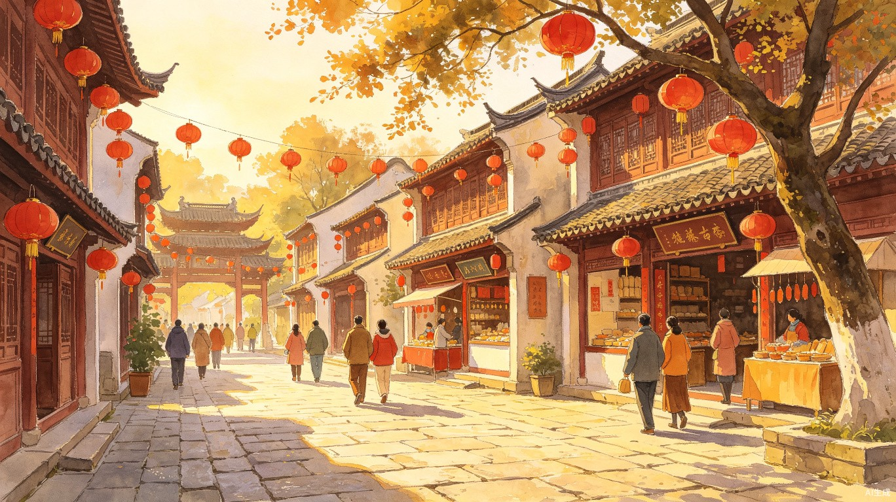
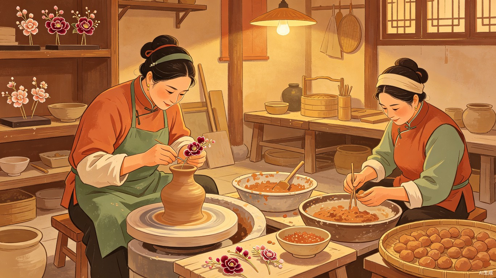

以"一街、三轴、四坊、九巷、多景"的空间布局重现古韵，承载顺昌补齐城市短板、焕活文化基因的雄心。
龙湖湾城市客厅是改造提升顺昌县东大门、展示顺昌城市新形象的重要窗口。项目以"千年顺昌，大圣祖地"为核心，深度融合大圣文化、红色文化、非遗技艺与畲族风情。
街区汇聚非遗工坊、特色餐饮、文创零售、亲子乐园等多元业态，形成"文化体验30%、餐饮零售40%、休闲娱乐20%"的黄金业态配比，构建"文化活化+商业变现"的双赢生态。
在这里，您可以漫步龙湖古街，品味顺昌灌蛋；走进非遗工坊，亲手体验绒花发簪制作；驻足龙湖书斋，欣赏顺昌籍书法名家墨宝；登城楼观江景，感受千年古城的脉搏。
点击地图上的景点标记，查看详细介绍、开放时间及游览建议。
点击地图上的景点
查看详细信息
一街三轴四坊九巷，每一处都藏着顺昌千年的故事。

以"一街、三轴、四坊、九巷、多景"的空间布局重现古韵，青石板路两旁是传统木质建筑，红灯笼高挂，非遗店铺林立。
广场上身披金甲、手持金箍棒的巨型大圣雕塑格外醒目，是顺昌"大圣祖地"文化的标志性景观，夜间灯光秀更添震撼。
沿富屯溪而建的滨水景观带，垂柳依依，荷花盛开。可登城楼观江景，亦可沿湖漫步，感受"一城山色半城湖"的诗意。

顺昌窑陶瓷烧制技艺、绒花发簪制作等传统技艺在此活态传承。游客可亲手体验，将心仪的作品收入囊中。
顺昌美食名片"灌蛋"（银包金）现场制作，蛋黄中灌入肉馅，工序精湛。还有自加热便携装，可将美味带回家。
古朴典雅的文化空间，集中展示以叶培贵等为代表的顺昌籍书法名家作品，翰墨飘香，定期举办书画培训和展览。
根据您的时间安排，选择最适合的游览方案。
从主入口进入，在巨型大圣雕塑前合影留念，感受"大圣祖地"的文化氛围。
沿青石板路游览古街，欣赏传统建筑，逛非遗店铺，感受千年古韵。
亲手体验顺昌窑陶瓷或绒花发簪制作，感受非遗技艺的魅力。
品尝顺昌特色美食"灌蛋"，观看现场制作过程，体验舌尖上的非遗。
沿湖边散步，登城楼远眺江景，结束愉快的半日之旅。
上午从主入口开启旅程，参观大圣雕塑广场，了解顺昌大圣文化的历史渊源。
参观书法展览，欣赏顺昌籍名家墨宝，感受翰墨书香的文化气息。
沿着三轴四坊九巷细细探索，每一家店铺都有独特的故事和匠心。
品尝顺昌灌蛋、畲族美食等特色佳肴，在古街餐馆享受悠闲午餐。
下午亲手制作陶瓷或绒花，将这份独特的纪念品带回家。
了解"培训+代售"模式，感受非遗技艺与城乡共富的融合。
傍晚时分登城楼，俯瞰富屯溪两岸风光，欣赏最美日落。
逛闽北非遗市集，挑选文创好物，享用丰盛晚餐。
夜幕降临，古街华灯初上，红灯笼与霓虹交相辉映，别有一番风味。
巨型大圣雕塑在灯光映衬下金光闪闪，是夜间最震撼的视觉焦点。
如遇"湖畔音乐节"等品牌活动，可在龙湖湾畔欣赏精彩演出。
品尝夜市小吃，逛文创小店，感受古街夜晚的烟火气息。
触摸顺昌的文化基因，体验活态传承的非遗技艺。
龙湖湾城市客厅深度融合顺昌本土文化，打造"文化活化+商业变现"的双赢生态。在这里，每一项非遗技艺都不是博物馆里的静态展品，而是可以亲手体验、带回家的活态文化。
从顺昌灌蛋的精湛手艺，到顺昌窑陶瓷的千年烧制技艺；从绒花发簪的细腻工艺，到书法名家的翰墨飘香——每一种体验都是与历史对话的珍贵机会。
俗称"银包金"，在蛋黄中灌入肉馅，承载着顺昌人民对美好生活的期盼。
千年烧制技艺，以非遗工坊形式走进大众视野，游客可亲手制作专属陶器。
雅俗共赏的传统手工艺品，县妇联通过"培训+代售"模式助力城乡共富。
顺昌是齐天大圣信俗文化的发源地，广场上的巨型大圣雕塑是必打卡地标。
为您提供舒适便捷的游览体验。
提供咨询、导览图、行李寄存、轮椅租借等服务
景区周边设有大型停车场，自驾游无忧
景区内分布多处卫生设施，干净整洁
配备婴儿护理台、哺乳座椅等设施
景区配备急救箱，游客中心可联系医疗支援
扫码获取各景点语音导览，支持中英文
无障碍通道、专用卫生间、轮椅通道全覆盖
遗失物品请至游客中心登记或查询